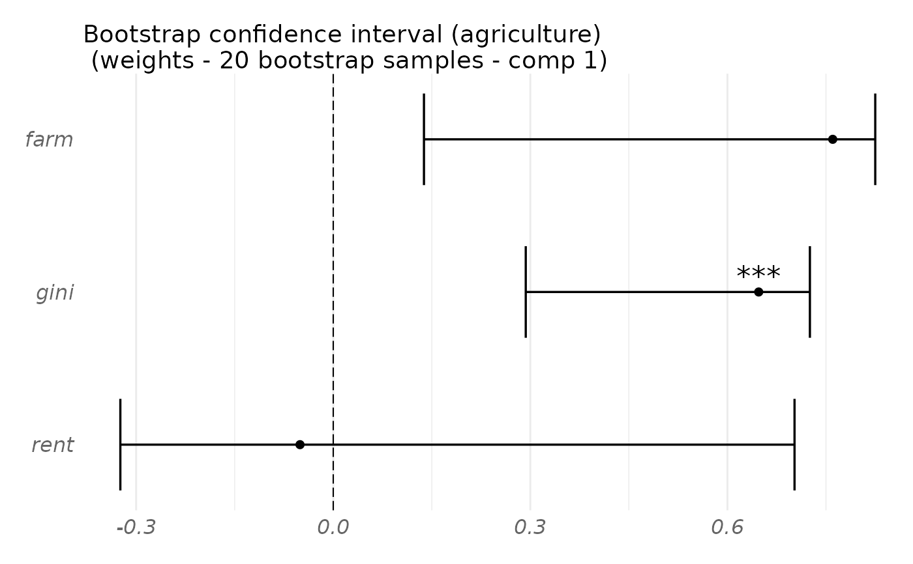

Plot the results of a fitted rgcca_bootstrap object. Each block variable is shown along with its associated bootstrap confidence interval and stars reflecting the p-value of assigning a strictly positive or negative weight to this block variable.
Usage
# S3 method for bootstrap
plot(
x,
block = seq_along(x$rgcca$call$blocks),
comp = 1,
type = "weights",
empirical = TRUE,
n_mark = 30,
display_order = TRUE,
show_stars = TRUE,
title = NULL,
cex = 1,
cex_sub = 12 * cex,
cex_main = 14 * cex,
cex_lab = 12 * cex,
cex_point = 3 * cex,
colors = NULL,
adj.method = "fdr",
...
)Arguments
- x
A fitted rgcca_bootstrap object (see
rgcca_bootstrap)- block
A numeric corresponding to the block(s) to plot.
- comp
A numeric vector indicating the component(s) to consider.
- type
A string indicating the bootstrapped object to plot: block-weight vectors ("weights", default) or block-loading vectors ("loadings").
- empirical
A logical value indicating if the bootstrap confidence intervals and p-values are derived from the empirical distribution. (default: TRUE)
- n_mark
An integer defining the maximum number of variables to plot.
- display_order
A logical value for ordering the variables. If TRUE, variables are ordered from highest to lowest absolute value. If FALSE, the block order is used. Default is TRUE.
- show_stars
A logical value indicating if the significance levels are displayed.
- title
A string specifying the title of the plot.
- cex
A numeric defining the size of the objects in the plot. Default is one.
- cex_sub
A numeric defining the font size of the subtitle. Default is 12 * cex.
- cex_main
A numeric defining the font size of the title. Default is 14 * cex.
- cex_lab
A numeric defining the font size of the labels. Default is 12 * cex.
- cex_point
A numeric defining the font size of the points. Default is 3 * cex.
- colors
Colors used in the plots.
- adj.method
A string indicating the method used to adjust the p-values. It must be a method handled by the p.adjust function. Default is "fdr".
- ...
Additional graphical parameters.
Examples
data("Russett")
blocks <- list(
agriculture = Russett[, seq(3)],
industry = Russett[, 4:5],
politic = Russett[, 6:11]
)
fit.rgcca <- rgcca(blocks, ncomp = 2, method = "rgcca", tau = 1)
fit.boot <- rgcca_bootstrap(fit.rgcca, n_boot = 20, n_cores = 1)
#> Bootstrap samples sanity check...
#> OK
#>
| | 0 % ~calculating
|+++ | 5 % ~00s
|+++++ | 10% ~00s
|++++++++ | 15% ~00s
|++++++++++ | 20% ~00s
|+++++++++++++ | 25% ~00s
|+++++++++++++++ | 30% ~00s
|++++++++++++++++++ | 35% ~00s
|++++++++++++++++++++ | 40% ~00s
|+++++++++++++++++++++++ | 45% ~00s
|+++++++++++++++++++++++++ | 50% ~00s
|++++++++++++++++++++++++++++ | 55% ~00s
|++++++++++++++++++++++++++++++ | 60% ~00s
|+++++++++++++++++++++++++++++++++ | 65% ~00s
|+++++++++++++++++++++++++++++++++++ | 70% ~00s
|++++++++++++++++++++++++++++++++++++++ | 75% ~00s
|++++++++++++++++++++++++++++++++++++++++ | 80% ~00s
|+++++++++++++++++++++++++++++++++++++++++++ | 85% ~00s
|+++++++++++++++++++++++++++++++++++++++++++++ | 90% ~00s
|++++++++++++++++++++++++++++++++++++++++++++++++ | 95% ~00s
|++++++++++++++++++++++++++++++++++++++++++++++++++| 100% elapsed=00s
plot(fit.boot, type = "weight", block = 1, comp = 1)
